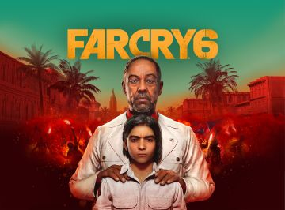
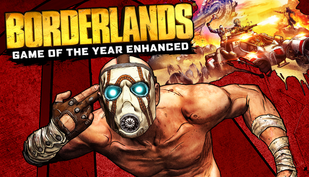

Far Cry 6
- Developer : Ubisoft Toronto
- Release Date : After April 2021 (but before March 2022)
- Genre/s : Role-playing
- Description : Welcome to Yara, a tropical paradise frozen in time. As the dictator of Yara, Anton Castillo is intent on restoring his nation back to its former glory by any means, with his son, Diego, following in his bloody footsteps. Their oppressive rule has ignited a revolution.

Call of Juarez Gunslinger
- Developer : Ubisoft , Techland
- Release Date : 14 May 2013
- Genre/s : Role-playing
- Description : Gunslinger is the fourth installment of the Call of Juarez series of western-inspired games. The frame story, told in cutscenes, begins in 1910, in Kansas, where Silas, a patron in the pub, brags about his adventures in the Wild West. This old man claims he used to be a bounty hunter who took down many of the famous outlaws. Most of the game has the player re-enacting Silas's presumed past, while in the present the hero is narrating his own story off-screen. Silas is an unreliable narrator, however, and his own in-game audience will point at plot holes in his tall tales.

Borderlands game of the year enhanced
- Developer : Gearbox Software, Blind Squirrel Games
- Release Date : 3 Apr 2019
- Genre/s : Action, Shooter, RPG
- Description : Discover the co-op shooter-looter that started it all, crammed with content and enhancements! Equip bazillions of guns as one of four trigger-happy mercenaries, each with unique RPG skills. Take on the lawless desolate planet Pandora in pursuit of powerful alien technology: The Vault. With new weapons, visual upgrades, all 4 add-on packs and more, enjoy the highly acclaimed FPS/RPG solo or together with friends! Bazillions of Guns: Rocket-launching shotguns, enemy-torching revolvers, SMGs that fire lightning rounds, and tons more.

Red Dead Redemption 2
- Developer : Rockstar Games
- Release Date : 26 Oct 2018
- Genre/s : Action, Adventure
- Description : America, 1899. The end of the wild west era has begun as lawmen hunt down the last remaining outlaw gangs. Those who will not surrender or succumb are killed. After a robbery goes badly wrong in the western town of Blackwater, Arthur Morgan and the Van der Linde gang are forced to flee. With federal agents and the best bounty hunters in the nation massing on their heels, the gang must rob, steal and fight their way across the rugged heartland of America in order to survive. As deepening internal divisions threaten to tear the gang apart, Arthur must make a choice between his own ideals and loyalty to the gang who raised him.

Star Wars: Battlefront 2
- Developer : Electronic Arts DICE
- Release Date : 17 November 2017
- Genre/s : Action, Shooter, Adventure
- Description : The game is set in the Star Wars universe during and after the fall of the Galactic Empire. Its story mode fills the gap between the original trilogy and Episode VII: The Force Awakens. In the story campaign mode, the player controls the Imperial Inferno Squad led by the game's main protagonist, Iden Versio (who is voiced by Janina Gavankar). She and her special forces group participate in a variety of missions spanning almost 30 years. On certain levels, the player will also control other characters, including rebels.

Tomb Raider
- Developer : Crystal Dynamics
- Release Date : 5 Mar 2013
- Genre/s : Action, Adventure
- Description : A cinematic revival of the series in its action third person form, Tomb Rider follows Lara in her least experience period of life – her youth. Heavily influenced by Naughty Dog’s “Uncharted”, the game is a mix of everything, from stealth and survival to combat and QTE action scenes. Young Lara Croft arrives on the Yamatai, lost island near Japan, as the leader of the expedition in search of the Yamatai Kingdom, with a diverse team of specialists.